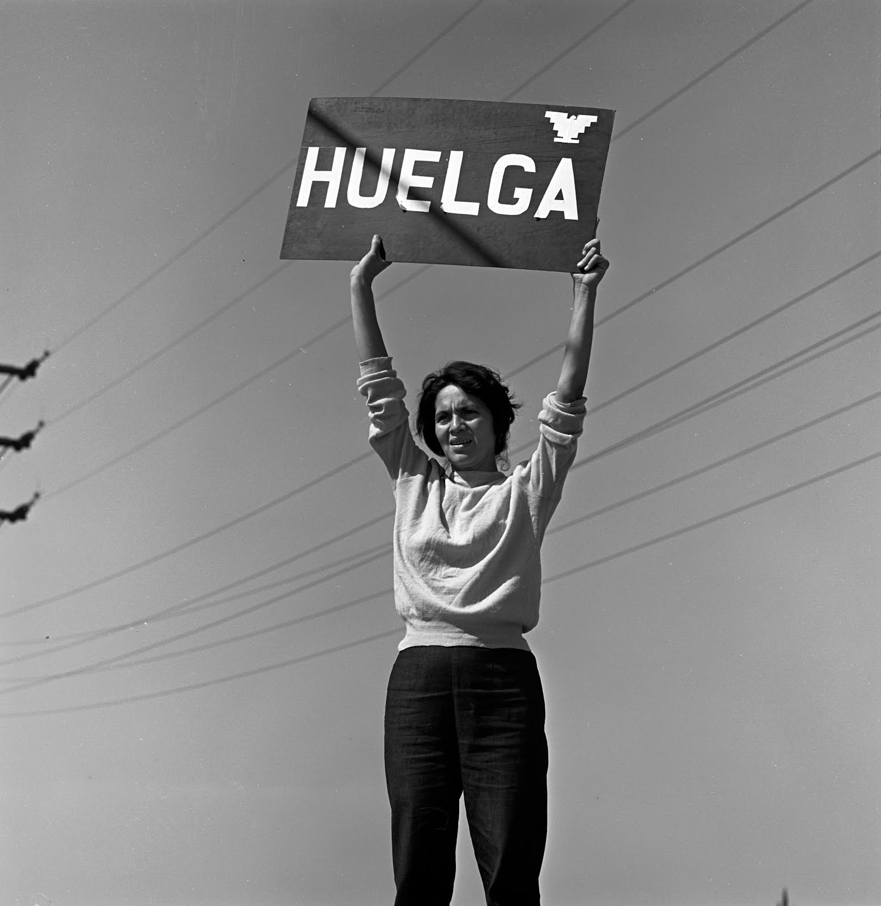

Inspirational Latinas
The latinas that continue to inspire whose stories may be not so well known. Here to inspire the next generation of game changers.
- Dolores Huerta
- Ellen Ochoa
- Maria Elena Salinas
- Julia Alvarez
Dolores Huerta

Most everyone has heard the name Cesar Chavez, as one of the prominent leaders in workers rights, but a name less known among the public until more recently is Dolores Huerta.
You likely know the phrase “Si se puede” or the English version used on the 2008 campaign “Yes we can”. Dolores Huerta was the one that came up with that slogan (NPR)
You probably also didn’t know that the successful idea to strike against grapes was Dolores’ idea. Cesar wanted to boycott potatoes instead.(Morado Lens Podcast and Westword)
She was called into action from viewing the poor and unjust working environments farm workers faced. She combatted violence and sexism for her participation in the movement. Dolores’ involvement with the UFW lead to a lifelong commitment to activism and political involvement.
She still works to defend civil rights speaking across the country with students. She is inspiring in her commitment, and in the obstacles she faced and overcame.
Ellen Ochoa

Photo courtesy of Wikipedia
Where to learn more
Maria Elena Salinas

Photo courtesy of Wikipedia
Where to learn more
Julia Alvarez

Photo courtesy of Wikipedia
Where to learn more